คู่มือปฏิบัติงาน — ส่วนกลาง/จังหวัด
ระบบรถรับส่งนักเรียนจังหวัดลำปาง — https://schoolbuslampang.com เวอร์ชัน Phase 10.13C • อัปเดต 2026-06-24 • ปรับปรุงล่าสุด 2026-09-06 (ตรวจกับระบบจริง commit 14caf5b)
📷 หมายเหตุภาพหน้าจอ: ข้อมูลส่วนบุคคล (ชื่อ/เบอร์) ในภาพถูกเบลอเพื่อความเป็นส่วนตัว — เมื่อใช้งานจริงจะแสดงข้อมูลตามปกติ
ภาพรวม 30 วินาที
- บทบาทนี้ทำอะไรได้ (ดูอย่างเดียวเป็นหลัก ครอบคลุมทั้งจังหวัด):
- ดู ภาพรวมจังหวัด (Dashboard) — KPI การรับ-ส่ง, รถ, เหตุฉุกเฉิน, โรงเรียนเสี่ยง
- ดูข้อมูล สังกัด / โรงเรียน / นักเรียน / รถรับส่ง ทั้งจังหวัด
- ดู ตำแหน่งรถแบบ live และ แผนที่จุดรับส่ง (ภาพรวม)
- ดู ความพร้อมเปิดใช้งาน (Deployment Readiness) และ เหตุฉุกเฉิน ทั้งจังหวัด
- ดู ประวัติการแก้ไข (Audit Log) ทั้งระบบ — โรงเรียน (บัญชีเต็มสิทธิ์) และสังกัดมีเมนูนี้เช่นกัน แต่เห็นเฉพาะขอบเขตของตน
- ดู/ส่งออก รายงาน รายวัน/รายเดือน/สรุป (CSV / Excel / PDF)
- เข้าระบบด้วย: ชื่อผู้ใช้ของบัญชีส่วนกลาง (ผู้ดูแลระบบตั้งให้ — ไม่ใช่ค่าตายตัว) + รหัสผ่าน
- อุปกรณ์ที่แนะนำ: คอมพิวเตอร์ (desktop) เป็นหลัก เหมาะกับตาราง KPI/แผนที่/รายงาน • มือถือใช้ได้ มีแถบล่าง 4 แท็บ (หน้าแรก / โรงเรียน / ตำแหน่ง / รายงาน) — แถบล่างนี้จะเห็นเฉพาะตอนอยู่ในหน้าของจังหวัด เช่น หน้าแรก โรงเรียน ตำแหน่งปัจจุบัน ส่วนหน้ารายงานจะไม่มีแถบล่าง ให้กดปุ่ม ☰ มุมซ้ายบน เพื่อเปิดแถบเมนูด้านข้าง (มีครบทุกหน้า)
- 💡 ใช้คอมพิวเตอร์เมื่อต้องดูรายงานเชิงลึกหรือส่งออกไฟล์ เพราะตารางและการดาวน์โหลดสะดวกกว่า
- บัญชีนี้เหมาะกับหน่วยงานส่วนกลางระดับจังหวัด เช่น สภาองค์กรของผู้บริโภคจังหวัดลำปาง หรือ อบจ.
สารบัญงาน
| # | งาน | ใช้เมื่อ |
|---|---|---|
| 1 | เข้าสู่ระบบ | ทุกครั้งที่เริ่มใช้งาน |
| 2 | ดูภาพรวมจังหวัด (Dashboard) | งานประจำวัน ดูสถานการณ์รวม |
| 3 | ดูสถานะวันนี้ (เข้าทาง URL ตรง) | เจาะดูความคืบหน้าเช้า-เย็นถึงรายคน |
| 4 | ดูตำแหน่งรถปัจจุบัน (live) | ติดตามตำแหน่งรถระหว่างวิ่ง |
| 5 | ดูเหตุฉุกเฉินทั้งจังหวัด | เฝ้าระวังเหตุการณ์ |
| 6 | ดูสังกัด (ทุกสังกัดในจังหวัด) | เปรียบเทียบ KPI รายสังกัด |
| 7 | ดูโรงเรียนทั้งจังหวัด | ตรวจรายชื่อโรงเรียน |
| 8 | ค้นหานักเรียน | หานักเรียนรายคน |
| 9 | ดูรถรับส่งทั้งจังหวัด | ตรวจข้อมูลรถ/ความปลอดภัย |
| 10 | ดูแผนที่จุดรับส่ง | ดูภาพรวมจุดรับ-ส่ง |
| 11 | ดูความพร้อมเปิดใช้งาน | ก่อนเปลี่ยนโหมดความปลอดภัย |
| 12 | ดูประวัติการแก้ไข (Audit Log) | ตรวจสอบการกระทำในระบบ |
| 13 | ดูการเบี่ยงเส้นทาง ⚠️ | เมื่อ feature flag เปิดเท่านั้น |
| 14 | ดู/ส่งออกรายงาน | สรุปและดาวน์โหลดข้อมูล |
| 15 | เปลี่ยนรหัสผ่าน / ออกจากระบบ | ดูแลบัญชี |
งานที่ 1 — เข้าสู่ระบบ
ใช้เมื่อ: เริ่มใช้งานระบบทุกครั้ง
ขั้นตอน:
- เปิดเบราว์เซอร์ไปที่ https://schoolbuslampang.com → ระบบพาไปหน้าเข้าสู่ระบบ
- กรอก ชื่อผู้ใช้ของบัญชีส่วนกลาง ที่ช่อง "ชื่อผู้ใช้หรือทะเบียนรถ" (บัญชีส่วนกลางใช้ชื่อผู้ใช้ ไม่ใช่ทะเบียนรถ ส่วนข้อความใต้ช่องว่า "คนขับสามารถใช้ทะเบียนรถที่ได้รับมอบหมาย" เป็นคำแนะนำสำหรับคนขับเท่านั้น)
- กรอก รหัสผ่าน
- กด เข้าสู่ระบบ

ภาพ: หน้าเข้าสู่ระบบ (เดสก์ท็อป) — ช่อง "ชื่อผู้ใช้หรือทะเบียนรถ" และแถบ "ลืมรหัสผ่านหรือเข้าใช้งานไม่ได้" (ภาพถ่ายเมื่อ 27 ส.ค. 2569 — หน้าจอจริงตอนนี้กดแถบดังกล่าวแล้วจะขยายเห็นกล่อง "ช่องทางขอความช่วยเหลือ" และมีเครดิตผู้พัฒนาระบบอยู่ท้ายการ์ด)

ภาพ: หน้าเข้าสู่ระบบ (มือถือ) — ภาพถ่ายเมื่อ 27 ส.ค. 2569 ก่อนปรับหน้าจอมือถือและก่อนเพิ่มเครดิตผู้พัฒนาระบบ
✅ ผลลัพธ์ที่ถูกต้อง: เข้าได้แล้วระบบพาไปหน้า "ภาพรวมจังหวัด" อัตโนมัติ
ข้อควรรู้เรื่องรหัสผ่าน:
- บัญชีที่ย้ายมาจากระบบเดิมบางบัญชีมีรหัสผ่านเริ่มต้นที่สั้นกว่าเกณฑ์ปัจจุบัน (เอกสารนี้เผยแพร่สาธารณะ จึงไม่พิมพ์รหัสไว้) — ระบบ ไม่ได้ บังคับให้เปลี่ยนโดยอัตโนมัติ จะบังคับเฉพาะบัญชีที่ผู้ดูแลระบบรีเซ็ตรหัสผ่านให้ใหม่เท่านั้น ถ้ารหัสผ่านของท่านยังสั้นกว่า 8 ตัวอักษร ให้เปลี่ยนเองทันทีที่เมนูบัญชี (มุมขวาบน) → "เปลี่ยนรหัสผ่าน" (ดูงานที่ 15)
- ถ้าบัญชีต้องเปลี่ยนรหัส (must_change_password) ระบบพาไปหน้า เปลี่ยนรหัสผ่าน ทันที และ ใช้เมนูอื่นไม่ได้ จนเปลี่ยนสำเร็จ (เข้าหน้าอื่นจะขึ้น "กรุณาเปลี่ยนรหัสผ่านก่อนใช้งานระบบ")
- กฎรหัสผ่านใหม่: ยาว 8–128 ตัว, ห้ามตรงกับชื่อผู้ใช้, ห้ามคาดเดาง่าย (
12345678,password), ห้ามอักขระเดียวซ้ำ (aaaaaaaa)

ภาพ: หน้าเปลี่ยนรหัสผ่าน (บังคับเปลี่ยนครั้งแรก)
⚠️ ถ้าติดปัญหา:
- ขึ้น "ชื่อผู้ใช้หรือรหัสผ่านไม่ถูกต้อง" → ชื่อผู้ใช้/รหัสผ่านผิด (หรือบัญชีถูกปิด)
- ขึ้น "มีการพยายามเข้าสู่ระบบหลายครั้งจากเครือข่ายนี้" → ระบบระงับการเข้าสู่ระบบชั่วคราวประมาณ 15 นาที (ล็อกชั่วคราว ไม่ใช่ปิดบัญชีถาวร) เกิดได้ 2 กรณี คือ กรอกรหัสผิดของบัญชีเดิม 10 ครั้ง จากเครื่อง/เครือข่ายเดียวกันภายใน 15 นาที หรือ กดเข้าสู่ระบบรวมกัน 20 ครั้งจากเครือข่ายเดียวกัน ภายใน 15 นาที (นับรวมทุกคนที่ใช้อินเทอร์เน็ตวงเดียวกัน) — รอให้ครบเวลาแล้วลองใหม่ อย่าเดารหัสต่อ
- ตั้งรหัสไม่ผ่าน → อ่านข้อความเตือน เช่น "รหัสผ่านต้องมีอย่างน้อย 8 ตัวอักษร" หรือ "รหัสผ่านนี้คาดเดาง่ายเกินไป"
- ลืมรหัสผ่าน: ที่หน้าเข้าสู่ระบบมีแถบกดขยาย "ลืมรหัสผ่านหรือเข้าใช้งานไม่ได้" กดแล้วจะเห็นกล่อง "ช่องทางขอความช่วยเหลือ" ซึ่งระบุว่า "ต้นสังกัด ขนส่ง และจังหวัด: ติดต่อผู้ดูแลระบบระดับจังหวัด" นั่นคือให้ติดต่อ ผู้ดูแลระบบ (admin) ให้รีเซ็ตให้ — ระบบยังไม่เปิดให้รีเซ็ตรหัสผ่านด้วยตนเอง และบัญชีส่วนกลางรีเซ็ตตัวเองไม่ได้ หลังรีเซ็ตแล้วระบบจะบังคับให้ตั้งรหัสใหม่ก่อนใช้งาน ส่วนกรณีที่ยังจำรหัสเดิมได้ ให้เปลี่ยนเองที่เมนูบัญชี (มุมขวาบน) → "เปลี่ยนรหัสผ่าน" (ดูงานที่ 15)
งานที่ 2 — ดูภาพรวมจังหวัด (Dashboard)
ใช้เมื่อ: ดูสถานการณ์ทั้งจังหวัดในที่เดียว (งานประจำวัน)
ขั้นตอน:
- เข้าสู่ระบบ → ระบบพาไปหน้า "ภาพรวมจังหวัด" อัตโนมัติ
- อ่านการ์ดและ KPI ภาพรวม (หน้านี้อัปเดตอัตโนมัติทุก 30 วินาที มีป้ายเวลาอัปเดตล่าสุด + ปุ่มรีเฟรชด้วยมือ)
- กดการ์ดเตือนเพื่อเลื่อนไปดูรายละเอียด หรือใช้ปุ่มลัด "ตำแหน่งปัจจุบัน" / "เหตุฉุกเฉิน" / "รายงาน"
สิ่งที่เห็นบนหน้าจอ:
- การ์ดผู้บริหาร 5 ใบ: (1) "รถทั้งหมด / รถที่ติดตามได้" (2) "สถานะสัญญาณรถ" (ออนไลน์/สัญญาณเก่า/ออฟไลน์/หยุดส่ง) (3) "การรับ-ส่งวันนี้" (ส่งเช้า/รับเย็น ทำแล้ว/ทั้งหมด) (4) "โรงเรียนยังไม่เริ่มใช้ระบบ" (ไม่มีการใช้งานใน 14 วันล่าสุด) (5) "โรงเรียนเสี่ยงวันนี้"
- แผงเตือนผู้บริหาร (Executive Attention Panel) — ปรากฏเมื่อมีปัญหา มีการ์ด "โรงเรียนเสี่ยง", "เหตุฉุกเฉินล่าสุด", "รถสำคัญ" กดแล้วเลื่อนไปยังส่วนที่เกี่ยวข้อง
- ภาพรวมระบบ — ยอดรวม นักเรียน / โรงเรียน / สังกัด / รถบริการนักเรียน
- ผลการดำเนินการวันนี้ — แถบความคืบหน้ารอบเช้า/เย็น (ทำแล้ว/ทั้งหมด/รอ/ลา + KPI %)
- โรงเรียนเสี่ยง — รายชื่อโรงเรียนที่ยังเช็กไม่ครบ
- สรุปรายสังกัด — KPI เช้า/เย็น + จำนวนเหตุฉุกเฉินต่อสังกัด
- เหตุฉุกเฉินล่าสุด — 5 รายการล่าสุด
- รถสำคัญต้องติดตาม — 10 อันดับแรกเรียงตามคะแนนความเสี่ยง
- สรุปผู้บริหาร — สรุปเป็นข้อ ๆ
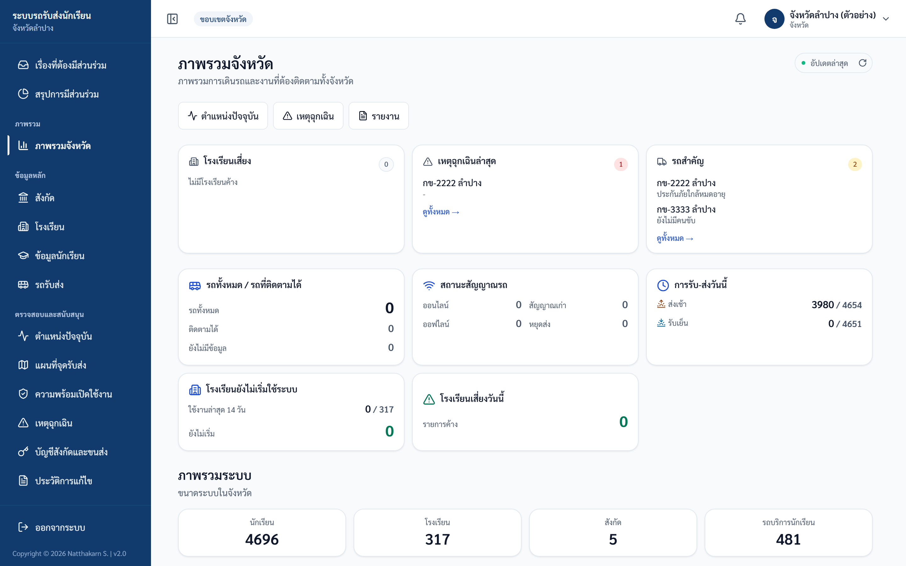
ภาพ: แดชบอร์ดภาพรวมจังหวัด
✅ ผลลัพธ์ที่ถูกต้อง: เห็นการ์ด KPI ครบ และตัวเลขอัปเดตล่าสุดภายใน 30 วินาที
⚠️ ข้อควรระวัง:
- "รถสำคัญต้องติดตาม" คำนวณจากคะแนนความเสี่ยง: ไม่ผ่านตรวจ +100, ยังไม่ตรวจ +80, ต้องแก้ไข +60, ประกันหมด +50, ไม่มีข้อมูลประกัน +40, ประกันใกล้หมด (<30 วัน) +20 — นับเฉพาะรถที่มีนักเรียน ≥1 คน และ ไม่แสดงเบอร์โทร
- "โรงเรียนยังไม่เริ่มใช้ระบบ" = ไม่มีการบันทึกสถานะเลยใน 14 วันล่าสุด
- ตัวเลขรถมี 2 ความหมาย: "รถทั้งหมด" (ทุกคันในระบบ) vs "รถบริการนักเรียน" (นับจากรายชื่อในรถ) — เป็นคนละตัวเลขโดยตั้งใจ
งานที่ 3 — ดูสถานะวันนี้ (เข้าทาง URL ตรง)
ใช้เมื่อ: ต้องการเจาะดูความคืบหน้าเช้า-เย็นถึงรายคน
ขั้นตอน:
- พิมพ์ URL
https://schoolbuslampang.com/province/status(หน้านี้ ไม่มีลิงก์ในเมนู) - กดขยายแต่ละระดับเพื่อเจาะลึก: สังกัด → โรงเรียน → รถ → นักเรียน
- ใช้ช่องค้นทะเบียนรถเพื่อหาเร็วขึ้น
สิ่งที่เห็น: โครงสร้างต้นไม้ขยายได้ 3 ระดับ (สังกัด → โรงเรียน → รถ) บอก "ทำแล้ว/ทั้งหมด" รอบเช้า-เย็นในแต่ละระดับ เมื่อกางถึงระดับรถจะเห็นตารางนักเรียนรายคน คอลัมน์ ชื่อ / ชั้น/ห้อง / ส่งเช้า / รับเย็น โดยแต่ละรอบแสดงเป็นป้ายข้อความ "เรียบร้อย" พร้อมเวลาที่เช็ก, "รอดำเนินการ" หรือ "ไม่ใช้บริการ"
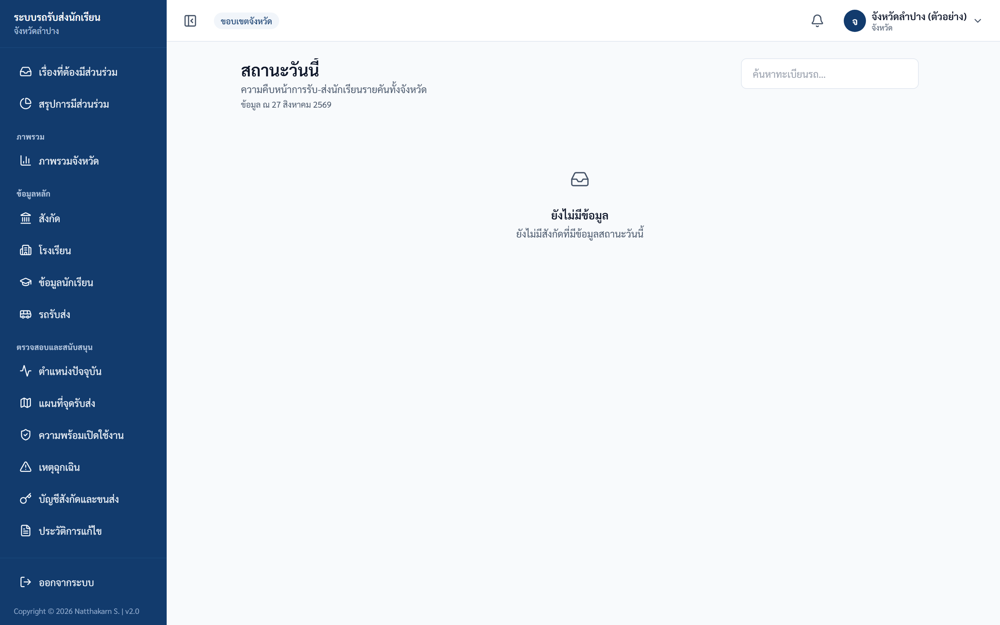
ภาพ: สถานะวันนี้ — กางจากสังกัด → โรงเรียน → รถ จนถึงรายชื่อนักเรียนและเวลาที่เช็ก (ภาพตัวอย่างนี้ถ่ายในวันที่ยังไม่มีข้อมูล จึงขึ้นว่า "ยังไม่มีข้อมูล" และยังไม่เห็นโครงสร้างต้นไม้)
✅ ผลลัพธ์ที่ถูกต้อง: เห็นต้นไม้ขยายได้ครบ 3 ระดับ ครอบคลุมทั้งจังหวัด (ดูอย่างเดียว)
งานที่ 4 — ดูตำแหน่งรถปัจจุบัน (live)
ใช้เมื่อ: ติดตามตำแหน่งรถระหว่างวิ่ง
ขั้นตอน:
- เปิดเมนู "ตำแหน่งปัจจุบัน"
- กดเลือกรถคันใดคันหนึ่งเพื่อโฟกัสบนแผนที่
- สังเกตการแจ้งเตือนเมื่ออุปกรณ์ offline หรือข้อมูลเก่าเกิน 45 วินาที
สิ่งที่เห็น: แผนที่ + รายการรถพร้อมสถานะสัญญาณ ออนไลน์ / สัญญาณเก่า / หยุดส่ง / ออฟไลน์ ทั้งจังหวัด (อัปเดตทุก ~15 วินาที) + การ์ด KPI: รถทั้งหมด, นักเรียนที่เกี่ยวข้อง, ออนไลน์, สัญญาณเก่า, หยุดส่ง, ออฟไลน์ / ยังไม่มีข้อมูล — และเมื่อมีรถในขอบเขตแล้ว จะมีแถบสรุป "รวมระดับจังหวัด" อยู่เหนือการ์ด KPI พร้อมการ์ดเพิ่มอีกสองใบคือ กำลังมีพิกัดจริง และ ยังไม่เคยส่งตำแหน่ง
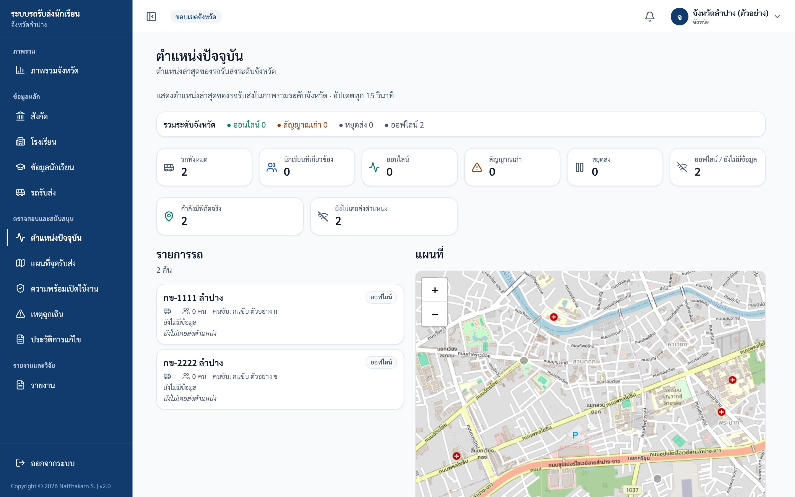
ภาพ: ตำแหน่งรถปัจจุบัน (live)
✅ ผลลัพธ์ที่ถูกต้อง: เห็นแผนที่และรายการรถพร้อมสถานะสัญญาณ
⚠️ ข้อควรระวัง:
- รถปรากฏบนแผนที่ เฉพาะตอนคนขับเปิด "เริ่มส่งตำแหน่ง" — รถที่ไม่เคยส่งจะอยู่กลุ่ม "ยังไม่เคยส่งตำแหน่ง"
- การเข้าหน้านี้ ถูกบันทึกในประวัติการแก้ไข (audit)
งานที่ 5 — ดูเหตุฉุกเฉินทั้งจังหวัด
ใช้เมื่อ: เฝ้าระวังเหตุการณ์ทั้งจังหวัด
ขั้นตอน:
- เปิดเมนู "เหตุฉุกเฉิน"
- เลื่อนดูรายการ / เปลี่ยนหน้า
สิ่งที่เห็น: รายการเหตุฉุกเฉินทั้งจังหวัด เรียงใหม่→เก่า แต่ละแถวแสดง ทะเบียนรถ / ช่องทาง (LINE หรือเว็บ) / เวลา / รายละเอียด / หมายเหตุ / ผลลัพธ์ / รายงานโดย
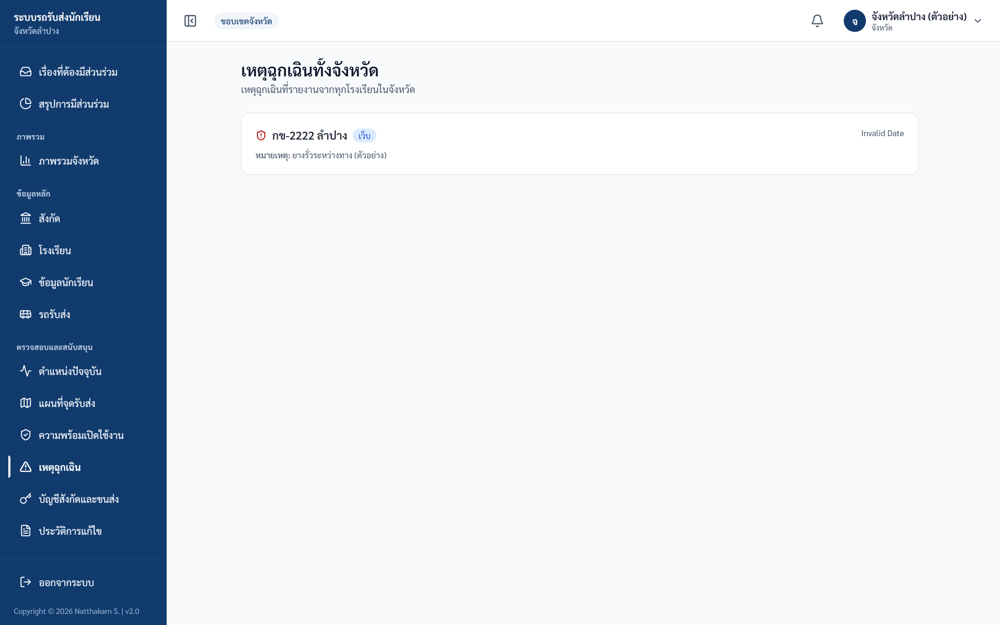
ภาพ: เหตุฉุกเฉินทั้งจังหวัด — รายการเรียงจากใหม่ไปเก่า (ดูได้อย่างเดียว) • ภาพตัวอย่างนี้ช่องวันที่ขึ้นว่า "Invalid Date" เพราะเป็นข้อมูลจำลอง บนระบบจริงจะแสดงวันเวลาที่แจ้งเหตุ
✅ ผลลัพธ์ที่ถูกต้อง: เห็นรายการเหตุฉุกเฉินเรียงตามเวลา
⚠️ ถ้าติดปัญหา: บทบาทส่วนกลาง ดูได้อย่างเดียว — แก้ไขหรือปิดเคสไม่ได้
งานที่ 6 — ดูสังกัด (ทุกสังกัดในจังหวัด)
ใช้เมื่อ: เปรียบเทียบ KPI รายสังกัด
ขั้นตอน:
- เปิดเมนู "สังกัด"
- อ่านตาราง/การ์ดเปรียบเทียบรายสังกัด (เรียงตาม KPI)
สิ่งที่เห็น: ตาราง "สรุป KPI รายสังกัด" แสดงทุกสังกัดที่มีอยู่ในระบบ (จำนวนสังกัดเปลี่ยนได้เมื่อมีการเพิ่มหรือยกเลิกสังกัด) แต่ละแถวแสดง สังกัด / โรงเรียน / นักเรียน / รถ / KPI ส่งเช้า / KPI รับเย็น / ฉุกเฉิน / ระดับ — ใต้ตารางมีหัวข้อ "KPI รายสังกัด" เป็นการ์ดแยกรายสังกัด แสดง KPI ส่งเช้า / KPI รับเย็น / จำนวนโรงเรียนและนักเรียน / เหตุฉุกเฉินวันนี้
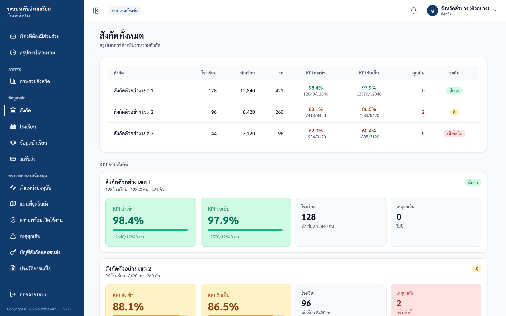
ภาพ: รายการสังกัด
✅ ผลลัพธ์ที่ถูกต้อง: เห็นตาราง/การ์ดเปรียบเทียบครบทุกสังกัด (ดูอย่างเดียว)
งานที่ 7 — ดูโรงเรียนทั้งจังหวัด
ใช้เมื่อ: ตรวจรายชื่อโรงเรียน
ขั้นตอน:
- เปิดเมนู "โรงเรียน"
- เลือก "ทุกสังกัด" หรือเลือกสังกัดที่ต้องการเพื่อกรอง
- เลื่อนดู / เปลี่ยนหน้า (หน้าละ 50 โรงเรียน ปรับจำนวนต่อหน้าไม่ได้ ปุ่ม "ก่อนหน้า" / "ถัดไป" และช่องใส่เลขหน้าอยู่ใต้ตาราง) จำนวนรวมอยู่เหนือตาราง เช่น "ทั้งหมด 317 โรงเรียน" และจะเปลี่ยนเป็น "พบ 42 โรงเรียน" เมื่อเลือกกรองสังกัด
สิ่งที่เห็น: รายชื่อโรงเรียนทั้งจังหวัด แต่ละแถวแสดง โรงเรียน / สังกัด / จำนวนนักเรียน / จำนวนรถ
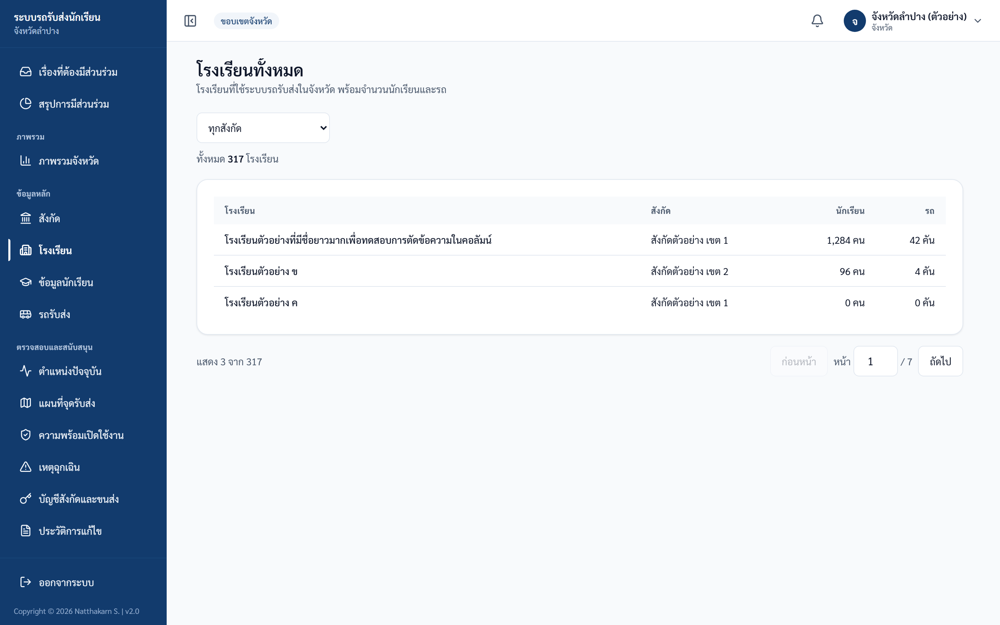
ภาพ: โรงเรียนทั้งจังหวัด
✅ ผลลัพธ์ที่ถูกต้อง: เห็นรายชื่อโรงเรียน (ดูอย่างเดียว)
งานที่ 8 — ค้นหานักเรียน
ใช้เมื่อ: หานักเรียนรายคนทั้งจังหวัด
ขั้นตอน:
- เปิดเมนู "ข้อมูลนักเรียน"
- พิมพ์คำค้นในช่องค้นหา (ค้นได้ตามชื่อ / นามสกุล / รหัสนักเรียน — ระบบรอพิมพ์เสร็จ ~0.4 วินาทีจึงค้น)
- ใช้ตัวกรอง "ทุกสถานะการผูกรถ" (ยังไม่ผูกรถ / ผูกรถแล้ว), "ทุกชั้น", "ทุกสังกัด" และ "ทุกโรงเรียน" เพื่อจำกัดผลลัพธ์ — เมื่อมีคำค้นหรือตัวกรองอยู่ จะมีปุ่ม "ล้างตัวกรอง" ขึ้นมาให้กดล้างทั้งหมดในครั้งเดียว
- คลิก ทะเบียนรถ ในแถวเพื่อข้ามไปดูรถคันนั้น
สิ่งที่เห็น: แต่ละแถวแสดง ชื่อ-นามสกุล / ชั้น/ห้อง / รหัส / โรงเรียน / สังกัด / ทะเบียนรถ / รอบที่ใช้ — ชั้น/ห้องแสดงแบบย่อ เช่น "ป.4/2" หรือ "อ.2" ส่วนช่อง "รอบที่ใช้" เป็นป้ายเดียวว่า "เช้า" "เย็น" "เช้า · เย็น" หรือ "ไม่ใช้บริการ" และนักเรียนที่ยังไม่ผูกรถจะขึ้นว่า "ไม่มีรถ" (กดไม่ได้)
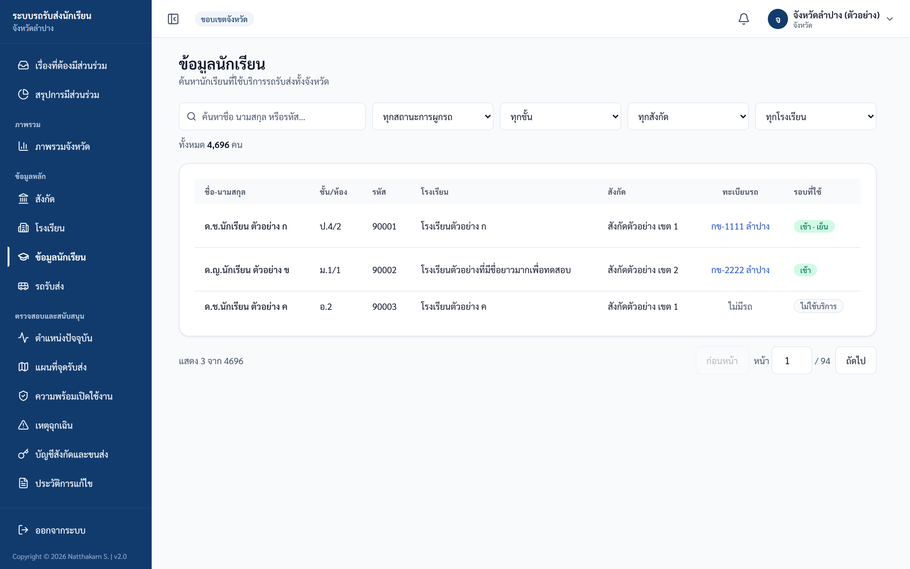
ภาพ: ข้อมูลนักเรียนทั้งจังหวัด
✅ ผลลัพธ์ที่ถูกต้อง: เห็นผลค้นหาตรงกับคำค้น/ตัวกรอง
⚠️ ข้อควรระวัง:
- หน้านี้ ไม่แสดงชื่อผู้ปกครองและเบอร์ผู้ปกครอง โดยตั้งใจ (นโยบายลดการเปิดเผยข้อมูลส่วนบุคคล/PDPA) — ถ้าต้องการข้อมูลผู้ปกครองต้องใช้บัญชีบทบาทโรงเรียน
- การค้นด้วยรหัสคือค้นจาก "รหัสนักเรียน"
งานที่ 9 — ดูรถรับส่งทั้งจังหวัด
ใช้เมื่อ: ตรวจข้อมูลรถและความปลอดภัย
ขั้นตอน:
- เปิดเมนู "รถรับส่ง"
- ค้นหาด้วยทะเบียนรถ
- กด "แสดงรายชื่อนักเรียน" (ปุ่มที่มีไอคอนลูกศร อยู่ด้านล่างในการ์ดรถแต่ละคัน) เพื่อขยายดูรายชื่อนักเรียนในรถคันนั้น — เมื่อขยายแล้วข้อความบนปุ่มจะเปลี่ยนเป็น "ซ่อนรายชื่อนักเรียน" กดอีกครั้งเพื่อย่อกลับ
สิ่งที่เห็น: การ์ดรถแต่ละคันแสดง ทะเบียน / ประเภทรถ / โรงเรียนที่ให้บริการ / จำนวนนักเรียน (ป้ายมุมขวาบนของการ์ด) / คนขับ / ผู้ดูแลรถ / เจ้าของรถ + ส่วนความปลอดภัย (ผลตรวจล่าสุด / ประกัน) โดยหน้านี้แสดง เฉพาะรถที่มีนักเรียนผูกอยู่อย่างน้อย 1 คน ตัวเลข "ทั้งหมด … คัน" ด้านบนจึงเป็นจำนวน "รถบริการนักเรียน" ไม่ใช่ "รถทั้งหมด" บนหน้าภาพรวมจังหวัดที่นับทุกคันในระบบ (ดูงานที่ 2) — รถที่ยังไม่มีรายชื่อนักเรียนจะไม่ปรากฏในหน้านี้
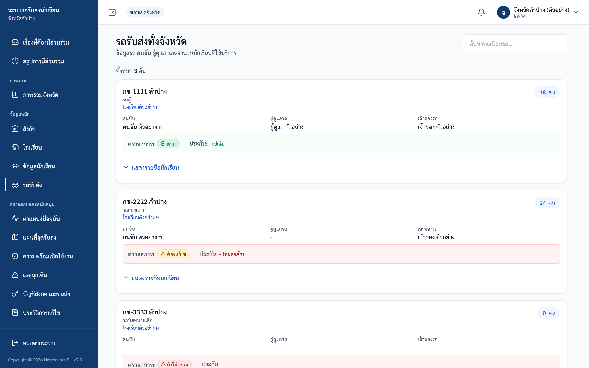
ภาพ: รถรับส่งทั้งจังหวัด
✅ ผลลัพธ์ที่ถูกต้อง: เห็นการ์ดรถพร้อมข้อมูลความปลอดภัย และขยายดูรายชื่อนักเรียนได้
⚠️ ข้อควรระวัง:
- เบอร์โทรทั้งหมดถูกตัดออก (เบอร์คนขับ / ผู้ดูแล / เจ้าของ) — แสดงเฉพาะชื่อ เพราะเป็นมุมมองภาพรวม
- ในตารางรายชื่อนักเรียนแบบขยาย คอลัมน์ "ผู้ปกครอง" และ "เบอร์โทร" แสดง "-" เสมอ (มุมมองส่วนกลางไม่คืนข้อมูลผู้ปกครอง)
งานที่ 10 — ดูแผนที่จุดรับส่ง
ใช้เมื่อ: ดูภาพรวมจุดรับ-ส่งระดับจังหวัด
ขั้นตอน:
- เปิดเมนู "แผนที่จุดรับส่ง"
- ตั้งค่าตัวกรองเพื่อจำกัดขอบเขต: ค้นหา (ชื่อจุดรับส่ง / ป้ายทะเบียน / โรงเรียน) / รอบ (เริ่มต้นเป็น "ทั้งหมด" เลือกเป็น เช้า / เย็น / เช้าและเย็น ได้) / ระดับชั้น / สังกัด / โรงเรียน / รถรับส่ง แล้วกดปุ่ม "ใช้ตัวกรอง" (ระบบจะยังไม่กรองข้อมูลจนกว่าจะกดปุ่มนี้) — กด "ล้างตัวกรอง" เพื่อกลับไปดูทั้งจังหวัด
สิ่งที่เห็น: แผนที่ภาพรวมจุดรับ-ส่ง + KPI (จุดรับส่งทั้งหมด, นักเรียนในขอบเขต, โรงเรียนที่เกี่ยวข้อง, รถที่เกี่ยวข้อง)
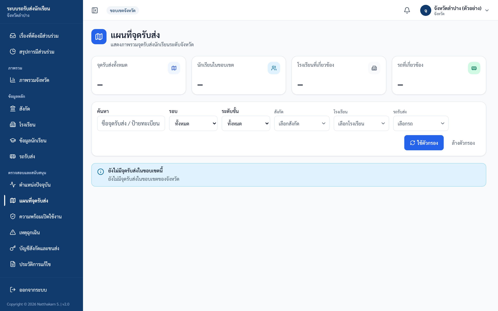
ภาพ: แผนที่จุดรับ-ส่ง — KPI ภาพรวมและแถบตัวกรอง (ต้องกด "ใช้ตัวกรอง" จึงจะกรอง) • ภาพตัวอย่างนี้ถ่ายจากขอบเขตที่ยังไม่มีจุดรับส่ง จึงยังไม่มีแผนที่ และ KPI เป็นขีด "—"
✅ ผลลัพธ์ที่ถูกต้อง: เห็นแผนที่ภาพรวมและ KPI ตามตัวกรอง
⚠️ ข้อควรระวัง:
- แผนที่นี้เป็น ภาพรวมเชิงตัวเลข ไม่มีข้อมูลส่วนบุคคล (ไม่มีชื่อ / เบอร์ / ที่อยู่นักเรียนรายคน)
- การเข้าหน้านี้ ถูกบันทึกในประวัติการแก้ไข (audit)
งานที่ 11 — ดูความพร้อมเปิดใช้งาน
ใช้เมื่อ: ตรวจความพร้อมก่อนเปลี่ยนโหมด สังเกตการณ์ (OBSERVE) → บังคับใช้ (ENFORCE)
ขั้นตอน:
- เปิดเมนู "ความพร้อมเปิดใช้งาน"
- อ่านโหมดปัจจุบันและถังสรุป
- ดูตารางรายการที่ต้องดำเนินการเพื่อประสานหน่วยงานที่รับผิดชอบ
สิ่งที่เห็น:
- โหมดความปลอดภัยปัจจุบัน (สังเกตการณ์ / บังคับใช้)
- 4 ถังสรุป — พร้อมใช้งาน / ต้องเติมข้อมูล / มีข้อมูลเสี่ยง / ถูกระงับ
- ความครบถ้วน 3 หมวด (เป็น %) — รถพร้อมใช้งาน / คนขับมีใบอนุญาตรับรอง / รถมีคนขับที่อนุญาต
- ตาราง "รายการที่ต้องดำเนินการ" — ระบุผู้รับผิดชอบ (โรงเรียน / ขนส่ง / จังหวัด) + การกระทำต่อไป + ป้าย "บังคับ" / "คำเตือน"
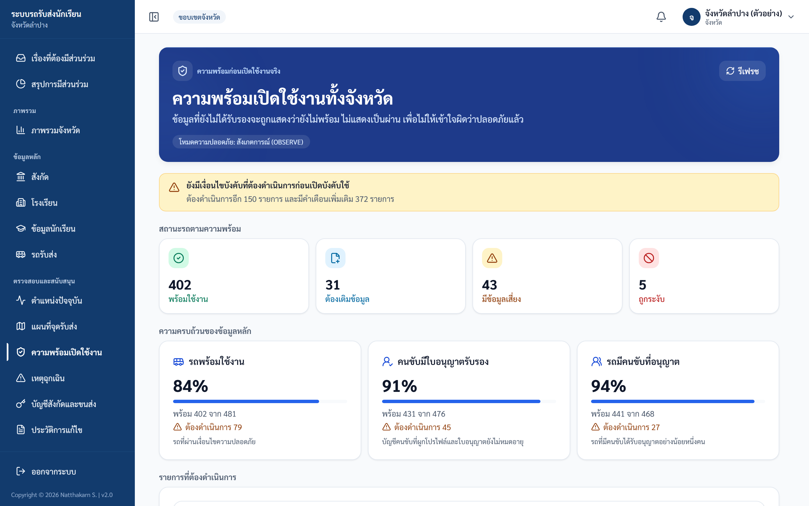
ภาพ: ความพร้อมเปิดใช้งาน — โหมดความปลอดภัย, 4 ถังสรุป, ความครบถ้วน 3 หมวด และตารางรายการที่ต้องดำเนินการ
✅ ผลลัพธ์ที่ถูกต้อง: เห็นโหมดปัจจุบัน, ถังสรุป, % ความครบถ้วน และตารางรายการที่ต้องทำ
⚠️ ข้อควรระวัง:
- เป็นตัวเลขภาพรวมล้วน ไม่มีรายชื่อ / เบอร์ / ข้อมูลส่วนบุคคล
- ระบบใช้หลัก "ไม่รู้ = ไม่ปลอดภัย" — ข้อมูลที่ยังไม่ได้รับการรับรองจะนับเป็น "ยังไม่พร้อม" ไม่ใช่ "ผ่าน" (เช่น ต้องมีผลตรวจ PASSED ที่ยังไม่หมดอายุ และใบอนุญาตที่ยืนยันแล้ว)
- การเปลี่ยนเป็นโหมดบังคับใช้ ไม่เกิดอัตโนมัติตามวันที่ — ต้องให้ผู้ดูแลระบบตั้งค่าด้วยมือเท่านั้น (บทบาทส่วนกลางเปลี่ยนโหมดเองไม่ได้)
งานที่ 12 — ดูประวัติการแก้ไข (Audit Log)
ใช้เมื่อ: ตรวจสอบการกระทำในระบบ (บทบาทนี้เห็นได้ทั้งระบบ)
ขั้นตอน:
- เปิดเมนู "ประวัติการแก้ไข"
- เลือกประเภทงานจากช่องเลื่อนลง (ค่าเริ่มต้นคือ "ทุกการกระทำ") และกำหนดช่วงวันที่ในช่อง "ตั้งแต่" และ "ถึง"
- กดปุ่ม "Export CSV" เพื่อดาวน์โหลดเป็นไฟล์ CSV (มี BOM เปิดในภาษาไทยได้)
สิ่งที่เห็น: ประวัติการกระทำทั้งระบบ เรียงจากล่าสุดไปเก่าสุด แต่ละรายการมีป้ายประเภท สร้าง / แก้ไข / ลบ / นำเข้า / อนุมัติ / ส่งออก / เข้าสู่ระบบ พร้อมชื่อผู้ทำ ("โดย ...") และวันเวลา
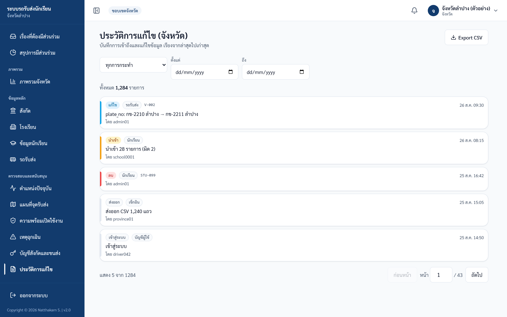
ภาพ: ประวัติการแก้ไข (Audit log)
✅ ผลลัพธ์ที่ถูกต้อง: เห็นรายการการกระทำตามตัวกรอง และดาวน์โหลด CSV ได้
⚠️ ข้อควรระวัง:
- ส่วนกลางและผู้ดูแลระบบเห็นประวัติ ทั้งระบบ ส่วนโรงเรียน (บัญชีเต็มสิทธิ์) และสังกัดมีเมนู "ประวัติการแก้ไข" ของตนเอง แต่เห็นเฉพาะขอบเขตของตน (คนขับและขนส่งไม่มีเมนูนี้)
- ค่าเดิม/ค่าใหม่ในบันทึกถูก ปกปิดข้อมูลส่วนบุคคล (เบอร์ผู้ปกครอง / เบอร์คนขับ / รหัสผู้ใช้ LINE) ทั้งในหน้าจอและในไฟล์ CSV
- Export CSV จำกัดสูงสุด 5,000 แถวล่าสุด (ถ้าเกินจะตัดและแจ้งในไฟล์) — ใช้ตัวกรองวันที่/การกระทำเพื่อจำกัดผลลัพธ์
- การ Export CSV ของหน้านี้จะถูกบันทึกเป็น audit เองด้วย
งานที่ 13 — ดูการเบี่ยงเส้นทาง (Route Deviations) ⚠️
ใช้เมื่อ: ดูรายงานการออกนอกเส้นทาง/ความล่าช้าของรถ — เฉพาะเมื่อ feature flag เปิดเท่านั้น
⚠️ ฟีเจอร์นี้ปิดอยู่เป็นค่าเริ่มต้น (dark) — ควบคุมด้วย feature flag
FEATURE_ROUTE_DEVIATIONฝั่งเซิร์ฟเวอร์ ซึ่งตอนนี้ยังไม่ได้เปิด เมื่อ flag ปิด เมนู "การเบี่ยงเส้นทาง" จะถูกซ่อนจากแถบเมนูอัตโนมัติ ถ้าเข้าหน้าโดยตรงจะเปิดได้แต่ โหลดข้อมูลไม่สำเร็จ (ขึ้น "โหลดข้อมูลไม่สำเร็จ") เพราะ API ยังไม่ถูกเปิด — ต้องให้ผู้ดูแลระบบเปิด flag ก่อน
ขั้นตอน (เมื่อ flag เปิดแล้ว):
- เปิดเมนู "การเบี่ยงเส้นทาง" (หรือเข้า URL
/admin/route-deviations) - ดูรายการประเภท เบี่ยงเส้นทาง / ล่าช้า / หยุดนิ่งนาน พร้อมป้ายระดับความรุนแรง วิกฤต / เตือน / ข้อมูล
- กดปุ่มกรองด้านบน "ทุกระดับ / วิกฤต / เตือน / ข้อมูล" เพื่อดูเฉพาะระดับที่ต้องการ และกดปุ่ม "เฉพาะที่ยังไม่แก้ไข" (มีตัวเลขจำนวนรายการต่อท้าย) เพื่อดูเฉพาะรายการที่ยังไม่ปิด — กดปุ่มเดิมซ้ำ หรือกด "ล้างตัวกรอง" เพื่อกลับมาดูทั้งหมด
สิ่งที่เห็น: หัวข้อหน้า "การเบี่ยงเส้นทาง / ความล่าช้า" — รายการพร้อมระดับความรุนแรงและสถานะ resolved
✅ ผลลัพธ์ที่ถูกต้อง: เห็นรายการการเบี่ยงเส้นทาง (เมื่อ flag เปิด)
⚠️ ข้อควรระวัง:
- บทบาทที่เข้าได้คือ ส่วนกลาง (province) และ admin เท่านั้น
- หน้านี้ใช้ร่วมกับฝั่ง admin จึงเข้าผ่าน URL
/admin/route-deviations(ไม่ใช่/province/...) แต่บทบาทส่วนกลางมีสิทธิ์เข้าได้ และมีลิงก์ในแถบเมนูของส่วนกลางอยู่แล้ว (เมื่อ flag เปิด)
📷 ไม่มีภาพหน้าจอ — ฟีเจอร์ "การเบี่ยงเส้นทาง" ถูกปิดด้วย feature flag (
FEATURE_ROUTE_DEVIATION) ยังไม่เปิดใช้งานจริง จึงยังไม่มีหน้าจอให้แสดง
งานที่ 14 — ดู/ส่งออกรายงาน
ใช้เมื่อ: สรุปและดาวน์โหลดข้อมูลทั้งจังหวัด (เข้าได้เต็มทั้งจังหวัด ไม่ถูกจำกัดขอบเขต)
ขั้นตอน:
- เปิดเมนู "รายงาน" → เลือกประเภท (แท็บด้านบน): รายวัน (เริ่มต้น) / รายเดือน / สรุปภาพรวม / เชิงนโยบาย (แท็บสุดท้ายเห็นเฉพาะส่วนกลางและ admin)
- ตั้งค่าตัวกรองของแท็บนั้น: แท็บ รายวัน เลือกช่อง "วันที่ของรายงาน" (ปี-เดือน-วัน) ที่มุมขวาบน • แท็บ รายเดือน เลือกช่อง "เดือนของรายงาน" (ปี-เดือน) และมีปุ่ม "ปัจจุบัน" สำหรับกลับมาเดือนนี้ • แท็บ สรุปภาพรวม และแท็บ เชิงนโยบาย (เห็นเฉพาะส่วนกลางและ admin) ไม่มีช่องตัวกรอง ระบบแสดงข้อมูลล่าสุดให้เลย มีเพียงปุ่ม "รีเฟรชข้อมูล" • หน้ารายงานยังไม่มีตัวกรองโรงเรียน สังกัด หรือทะเบียนรถ
- กดปุ่มดาวน์โหลด CSV / Excel / PDF — แท็บ รายวัน และ รายเดือน ปุ่มอยู่ท้ายหน้า ส่วนแท็บ สรุปภาพรวม ปุ่มอยู่ด้านบนข้างปุ่ม "รีเฟรชข้อมูล" และปุ่ม PDF ของแท็บนี้จะเปิดหน้าต่างพิมพ์ให้สั่ง "บันทึกเป็น PDF" เอง (CSV/Excel ของแท็บนี้เป็นข้อมูลรายวันของวันที่แสดงอยู่ ไม่ใช่ตารางสรุป) • แท็บ เชิงนโยบาย ยังไม่มีปุ่มดาวน์โหลด ให้สั่งพิมพ์จากเบราว์เซอร์แทน • หน้าต่าง "การตัดสินใจ" ที่กล่าวถึงในข้อควรระวังด้านล่างจะขึ้นเฉพาะตอนส่งออก PDF ของแท็บ รายวัน
รูปแบบไฟล์:
| รูปแบบ | หมายเหตุ |
|---|---|
| CSV | มี BOM เปิดในภาษาไทยได้ ป้องกันการแทรกสูตรอันตราย |
| Excel (.xlsx) | มีหัวตารางจัดรูปแบบ ชีต "รายงานประจำวัน" |
| ฟอนต์ไทย มีสรุปภาพรวม + รายโรงเรียน + รายคัน |
✅ ผลลัพธ์ที่ถูกต้อง: ได้ไฟล์รายงานตามประเภทและตัวกรองที่เลือก ครอบคลุมทั้งจังหวัด
⚠️ ข้อควรระวัง:
- เฉพาะ Export PDF ของแท็บรายวัน: ระบบเปิดหน้าต่างให้บันทึก "การตัดสินใจ" (Decision Log) ก่อน (ระบุประเภทและบันทึกการตัดสินใจ) — กด "ข้าม" ได้ หรือ "ยกเลิก" เพื่อไม่ส่งออก • CSV และ Excel ไม่ต้องผ่านหน้าต่างนี้
- การเปิดดูและส่งออกรายงาน นับรวมกัน จำกัด 40 ครั้ง/5 นาที ต่อหนึ่งเครือข่าย (ครอบคลุมทุก endpoint ใต้
/api/reports/*) — ถ้าเกินขึ้น "ขอรายงานถี่เกินไป กรุณารอสักครู่" - การส่งออกทุกครั้งถูกบันทึกในประวัติการแก้ไข

ภาพ: หน้ารายงาน — แท็บ รายวัน / รายเดือน / สรุปภาพรวม / เชิงนโยบาย พร้อมปุ่มดาวน์โหลด CSV / Excel / PDF (ภาพตัวอย่างนี้ถ่ายจากบัญชีผู้ดูแลระบบ แถบเมนูด้านซ้ายจึงเป็นเมนูของ admin — บัญชีจังหวัดจะเห็นแถบเมนูของจังหวัด)
งานที่ 15 — เปลี่ยนรหัสผ่าน / ออกจากระบบ
ใช้เมื่อ: ดูแลความปลอดภัยของบัญชี
ขั้นตอน (เปลี่ยนรหัสผ่าน):
- กด เมนูบัญชี (ชื่อผู้ใช้ มุมขวาบน) → "เปลี่ยนรหัสผ่าน"
- กรอก "รหัสผ่านปัจจุบัน" แล้วตั้ง "รหัสผ่านใหม่" ตามกฎ (8–128 ตัว, ห้ามตรงชื่อผู้ใช้, ห้ามคาดเดาง่าย, ห้ามอักขระเดียวซ้ำ) และพิมพ์ซ้ำในช่อง "ยืนยันรหัสผ่านใหม่" ให้ตรงกัน
- กดปุ่ม "เปลี่ยนรหัสผ่าน" → ขึ้นข้อความ "เปลี่ยนรหัสผ่านสำเร็จ กรุณาเข้าสู่ระบบใหม่" แล้วระบบจะพากลับไปหน้าเข้าสู่ระบบ — การเข้าสู่ระบบเดิม ทุกอุปกรณ์ จะหมดอายุทันที (เครื่องอื่นจะขึ้น "เซสชันหมดอายุจากการเปลี่ยนรหัสผ่าน") ให้เข้าสู่ระบบใหม่ด้วยรหัสผ่านใหม่
ขั้นตอน (ออกจากระบบ):
- กดออกจากระบบเมื่อเลิกใช้งาน
✅ ผลลัพธ์ที่ถูกต้อง: เปลี่ยนรหัสสำเร็จ / กลับสู่หน้าเข้าสู่ระบบ
⚠️ ถ้าติดปัญหา: ลืมรหัสเดิม → ติดต่อผู้ดูแลระบบ (admin) ให้รีเซ็ต (บัญชีส่วนกลางรีเซ็ตตัวเองไม่ได้)

ภาพ: เมนูบัญชี (มุมขวาบน) — "เปลี่ยนรหัสผ่าน" / "ออกจากระบบ" (ตัวอย่างจากบัญชีโรงเรียน หน้าตาเหมือนกันทุกบทบาท)
ตารางขอบเขตสิทธิ์ (อ้างอิงด่วน)
คุณเห็นข้อมูลได้แค่ไหน
| ข้อมูล | ขอบเขต |
|---|---|
| สังกัด / โรงเรียน / นักเรียน / รถ | ทั้งจังหวัด (ทุกสังกัด ทุกโรงเรียน ทุกคัน) |
| สถานะรับ-ส่ง / ตำแหน่งรถ / แผนที่จุดรับส่ง | ทั้งจังหวัด |
| เหตุฉุกเฉิน | ทั้งจังหวัด (ดูอย่างเดียว) |
| ประวัติการแก้ไข (Audit Log) | ทั้งระบบ (เท่ากับผู้ดูแลระบบ) — โรงเรียนและสังกัดเห็นเฉพาะขอบเขตของตน |
| รายงาน / ส่งออก | ทั้งจังหวัด |
ข้อมูลส่วนบุคคลที่ถูกปิดในมุมมองส่วนกลาง (โดยตั้งใจ)
| มุมมอง | สิ่งที่ถูกปิด |
|---|---|
| รถรับส่ง | เบอร์คนขับ / ผู้ดูแล / เจ้าของ (แสดงแต่ชื่อ) |
| ข้อมูลนักเรียน | ชื่อ/เบอร์ผู้ปกครอง (แสดงเป็น "-") |
| ประวัติการแก้ไข | เบอร์โทร / รหัสผู้ใช้ LINE ถูกปกปิด |
| แผนที่จุดรับส่ง / ความพร้อมเปิดใช้งาน | ภาพรวมเชิงตัวเลข ไม่มีข้อมูลส่วนบุคคล |
สิ่งที่ทำไม่ได้ (และใครทำแทน)
| ทำไม่ได้ | ใครทำแทน |
|---|---|
| เช็กอิน/เช็กเอาท์นักเรียน | คนขับ |
| เพิ่ม/แก้ไข/ลบนักเรียน, นำเข้าข้อมูล, จัดการบัญชีครู | โรงเรียน |
| สร้าง/รีเซ็ตบัญชีโรงเรียน, เพิ่มโรงเรียนใหม่ | สังกัด (affiliation) หรือ admin |
| ตรวจสภาพ/รับรองรถ, บันทึกผลตรวจ | ขนส่ง (transport) |
| แก้ไข/ปิดเคสเหตุฉุกเฉิน | ดูได้อย่างเดียว (ไม่มีบทบาทแก้ผ่านหน้านี้) |
| จัดการผู้ใช้ทั้งระบบ, geofences, จัดการจุดรับส่ง, ตั้งค่าระบบ | admin |
| เปลี่ยนโหมดความปลอดภัย (OBSERVE → ENFORCE) | admin (ตั้งค่าด้วยมือ) |
| รีเซ็ตรหัสตัวเอง (ลืมรหัส) | admin รีเซ็ตให้ |
สิ่งที่บทบาทส่วนกลาง "เขียน" ได้
- บันทึกการตัดสินใจ (Decision Log) ตอนส่งออก PDF
- เปลี่ยนรหัสผ่านตัวเอง และออกจากระบบ
- (โดยอ้อม) การเข้าดูตำแหน่งรถ/แผนที่จุดรับส่ง และการส่งออก จะถูกบันทึกในประวัติการแก้ไขเอง
ℹ️ รายงานเชิงนโยบาย มีให้ใช้แล้ว (อัปเดต 2026-08-14) — เข้าผ่านแท็บ "เชิงนโยบาย" ในเมนูรายงาน (ดูงานที่ 14) แสดงสรุปภาพรวมทั้งจังหวัดสำหรับผู้บริหาร เห็นเฉพาะบทบาทส่วนกลางและ admin
สรุปปัญหาที่พบบ่อย
| อาการ | วิธีแก้ |
|---|---|
| เบอร์โทรในหน้ารถ/นักเรียนเป็น "-" หมด | มุมมองภาพรวมระดับจังหวัดตัดเบอร์โทรและไม่แสดงข้อมูลผู้ปกครองโดยตั้งใจ (PDPA) ถ้าต้องการเบอร์ต้องใช้บัญชีบทบาทโรงเรียน |
| หาเมนู "การเบี่ยงเส้นทาง" ไม่เจอ | เมนูถูกซ่อนเมื่อ FEATURE_ROUTE_DEVIATION ปิด เข้าตรง (/admin/route-deviations) จะเปิดได้แต่โหลดข้อมูลไม่สำเร็จ — ให้ admin เปิด flag ก่อน |
| เมนูไม่มี "สถานะวันนี้" | หน้านี้มีจริงแต่ไม่ได้ลิงก์ในเมนู — เข้าทาง URL ตรง /province/status |
| ลืมรหัสผ่าน | หน้าเข้าสู่ระบบมีแถบ "ลืมรหัสผ่านหรือเข้าใช้งานไม่ได้" ที่บอกช่องทางติดต่อ แต่ยังไม่มีปุ่มรีเซ็ตรหัสด้วยตนเอง → ติดต่อ admin ให้รีเซ็ต หลังรีเซ็ตระบบบังคับตั้งรหัสใหม่ก่อนใช้ ("กรุณาเปลี่ยนรหัสผ่านก่อนใช้งานระบบ") |
| ตั้งรหัสใหม่ไม่ผ่าน | ต้องยาว ≥8 ตัว ไม่ตรงชื่อผู้ใช้ ไม่คาดเดาง่าย (12345678, password) ไม่ใช่อักขระเดียวซ้ำ (aaaaaaaa) |
| เข้าระบบไม่ได้ ขึ้นให้รอ 15 นาที | พยายามผิดหลายครั้ง ระบบล็อกชั่วคราว 15 นาที (ไม่ใช่ปิดถาวร) รอแล้วลองใหม่ |
| กด Export PDF แล้วเด้งหน้าต่างให้กรอก | เฉพาะ PDF ต้องผ่านหน้าต่าง Decision Log ก่อน — กด "ข้าม" ได้ ส่วน CSV/Excel ไม่ต้อง |
| Export CSV ประวัติการแก้ไขได้ไม่ครบ | ระบบตัดที่ 5,000 แถวล่าสุดและแจ้งในไฟล์ ใช้ตัวกรองวันที่/การกระทำให้แคบลง |
| กดส่งออก/เปิดรายงานรัว ๆ แล้วถูกบล็อก | เปิดดู+ส่งออกนับรวมกัน จำกัด 40 ครั้ง/5 นาที ("ขอรายงานถี่เกินไป กรุณารอสักครู่") รอแล้วลองใหม่ |
| รถบนแผนที่ไม่ขึ้น | รถมีพิกัดเมื่อคนขับเปิด "เริ่มส่งตำแหน่ง" เท่านั้น รถที่ไม่เคยส่งอยู่กลุ่ม "ยังไม่เคยส่งตำแหน่ง" |
| เปิดหน้าตำแหน่งรถ/แผนที่จุดรับส่งแล้วถูกบันทึก log | ใช่ การเข้าดูทั้งสองหน้าถูกบันทึกในประวัติการแก้ไข (audit) ตามนโยบายตรวจสอบ |
| จำนวนรถใน Dashboard ดูไม่ตรงกัน | "รถทั้งหมด" = ทุกคันในระบบ • "รถบริการนักเรียน" = นับจากรายชื่อนักเรียนในรถ — คนละตัวเลขโดยตั้งใจ |
| "ความพร้อม" ขึ้นว่ายังไม่พร้อม ทั้งที่กรอกข้อมูลแล้ว | หลัก "ไม่รู้ = ไม่ปลอดภัย" — ต้องได้รับการ "รับรอง" จริง (ผลตรวจ PASSED ที่ยังไม่หมดอายุ, ใบอนุญาตที่ยืนยันแล้ว) ผู้รับผิดชอบแก้คือโรงเรียน/ขนส่ง |
| โหมดบังคับใช้ (ENFORCE) จะเปิดเองตามวันที่ไหม | ไม่ — ต้องให้ admin ตั้งค่าด้วยมือเท่านั้น ระบบไม่เปลี่ยนโหมดอัตโนมัติตามวันที่ |
การขอความช่วยเหลือ
- ลืมรหัสผ่าน / บัญชีมีปัญหา → ติดต่อผู้ดูแลระบบ (admin)
- ต้องการเปิดฟีเจอร์ที่ถูกซ่อน (เช่น "การเบี่ยงเส้นทาง") หรือเปลี่ยนโหมดความปลอดภัย → ติดต่อ admin
- ข้อมูลรถ/การตรวจสภาพไม่ถูกต้อง → ประสานบทบาทขนส่ง (transport)
- ข้อมูลนักเรียน/บัญชีโรงเรียนไม่ถูกต้อง → ประสานสังกัด (affiliation) หรือโรงเรียน
เวลาแจ้งปัญหา โปรดส่ง: ชื่อผู้ใช้บัญชีส่วนกลาง, หน้า/เมนูที่เกิดปัญหา (เช่น "ภาพรวมจังหวัด", "รายงาน"), เวลาที่เกิดปัญหา, ภาพหน้าจอ (screenshot)
สิ้นสุดคู่มือปฏิบัติงานสำหรับส่วนกลาง/จังหวัด — กำกับดูแลภาพรวมเพื่อความปลอดภัยของนักเรียนทั้งจังหวัด